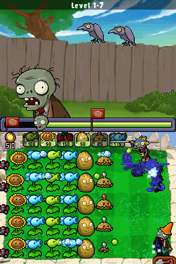
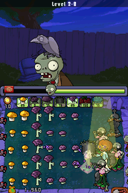
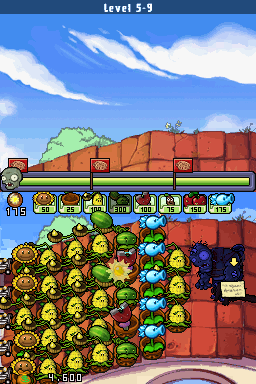
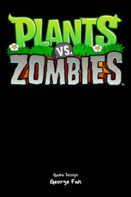
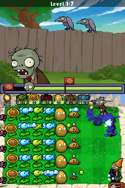
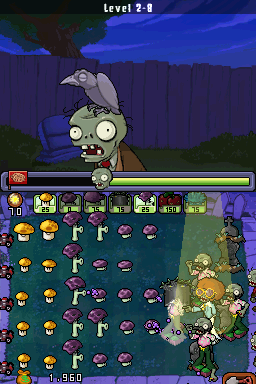
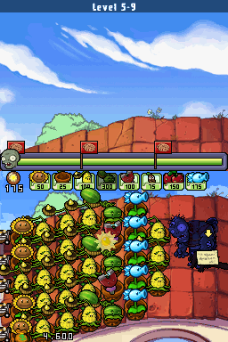
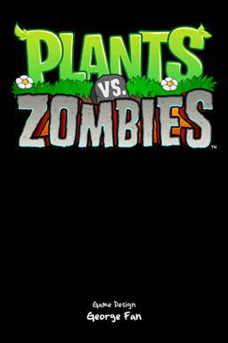

Plants vs. Zombies

Complete on 2022-07-04
4 / 5
Release Date: Jan 18, 2011
Meta Score: 81
Screenshots
 







Notes
Yup, Plants Vs Zombies, remember that game from pop culture circa the late 2000s? This is a DS port of the PC version, and it's pretty fully featured. Minimal usage of the DS's unique features, touch controls to replace mouse controls and the top screen displays some basic UI elements. If you're not familiar, this is a tower defence game where you grow plants to repel waves of zombies.
The game is fundamentally pretty fun. There's a continual trickle of new plants to use on each stage, and every 10 stages things get changed up significantly (night time, backyard with pool, etc). It's about the right length too, with 5x10 level stages, things never quite get boring.
The game isn't too hard. As long as you focus on building up your economy (sun generation) early and deploy plants that work against the enemies when necessary, things aren't too hard. Also the basic "big explosion one-use plant" remained the most reliable ally throughout the entire game really.
The "night, fog and water" levels got a bit obnoxious. You have to take so many utility plants to deal with the stuff, you can't build up your economy really well, and some of the enemies are also horrible to deal with.
The DS assets are obviously slightly lower resolution than some version, and it does suffer from a lot of lag a lot of the time when things get intense. Other than that, decent port.
Overall, pretty fun, if getting a little repetetive near the end.